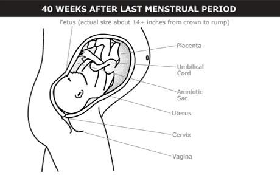

©copy writed by Group II
When you’re 10 months pregnant, your fetus reaches its final stage of development and you give birth.
The fetus has a CRL of about 13–14 inches (34–36 cm).
The fetus has a firm grasp.
The average newborn baby weighs 7–8 pounds and is between 18–22 inches (46–56 cm) long with legs extended.
Almost all of the vernix and lanugo are gone.
It’s common for newborns to have some lanugo that disappears over the first few months of life.

By the end of your pregnancy, your uterus has expanded from your pelvis to the bottom of your rib cage. Pregnancy symptoms in the tenth month largely depend on when the fetus drops down into the lower part of your uterus.
Shortness of breath, heartburn, and constipation usually improve when the fetus drops. But the position of the fetus lower in your pelvis causes frequent urination (peeing) and trouble holding urine (pee).
Your cervix will begin to open — dilate — to prepare for delivery. This may happen a few weeks before delivery, or it might start when you go into labor. You may feel sharp pains in your vagina as your cervix dilates.
After your newborn is delivered, the placenta and other tissues also come out of your body. This is called the afterbirth.
©copy writed by Group II